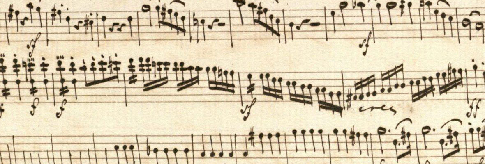

Complex Analysis
Some basic stuff
De Moivre's formula
Theorem. For any integer $n$ and any real number $\th,$ $$e^{i n \th} = (\cos \th + i \sin \th)^n = \cos n\th + i \sin n\th.$$
Algebraically we're raising $e^{i\th}$ to the $n$-th power and geometrically it's rotating $e^{i\th}$ by theta $n$ times.
Cauchy Schwarz inequality
Theorem. For any complex numbers $a_i, b_i,$ $$\left|\ \sum_{i=1}^n a_i \bar{b_i}\ \right|^2 \leq \sum_{i=1}^n |a_i|^2 \sum_{i=1}^n |b_i|^2.$$
Letting $a = (a_i), b = (b_i),$ we can write (taking square root of both sides) $$|\< a, b \>| \leq |a||b|.$$
Triangle inequality
Theorem. For any complex vector $a = (a_i), b = (b_i) \in \CC^n,$ $$|a + b| = \left( \sum_{i=1}^n |a_i + b_i|^2 \right)^{1/2} \leq \left( \sum_{i=1}^n |a_i|^2 \right)^{1/2} + \left( \sum_{i=1}^n |b_i|^2 \right)^{1/2} = |a| + |b|.$$
\triangle\triangle
Roots of complex numbers
Theorem. Let $w = |w|(\cos \psi + i \sin \psi).$ Then the $n$-th roots of $w$ are $$z_k = |w|^{1/n}(\cos \th_k + i \sin \th_k),$$ where $$\th_k = \frac{\psi}{n} + \frac{2\pi k}{n}, \quad\text{for}\quad k = 0,\ldots,n-1.$$

Two ways to represent a circle using complex numbers
One way to represent a circle is as the set of points $z$ s.t. $$|z - z_0| = r.$$ Another way is:
Proposition. Let $p$ and $q$ be distinct complex numbers, and $\r$ be any positive real number not equal to 1. Then the set of points $z$ s.t. $$|z - p| = \r |z - q|$$ is a circle.
Reference
- Complex Variables by Fisher.
- Complex Analysis by Stein & Shakarchi.
- Visual Complex Analysis by Needham.
- Everything else from the web.